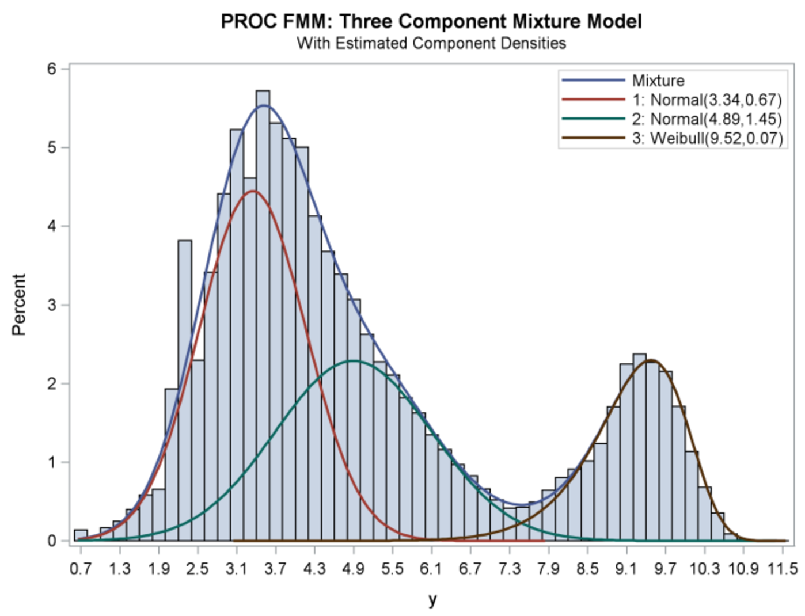
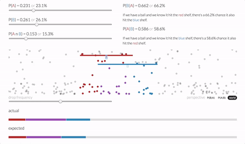
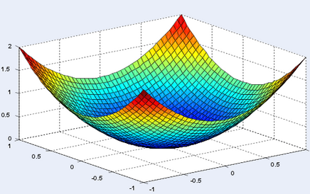
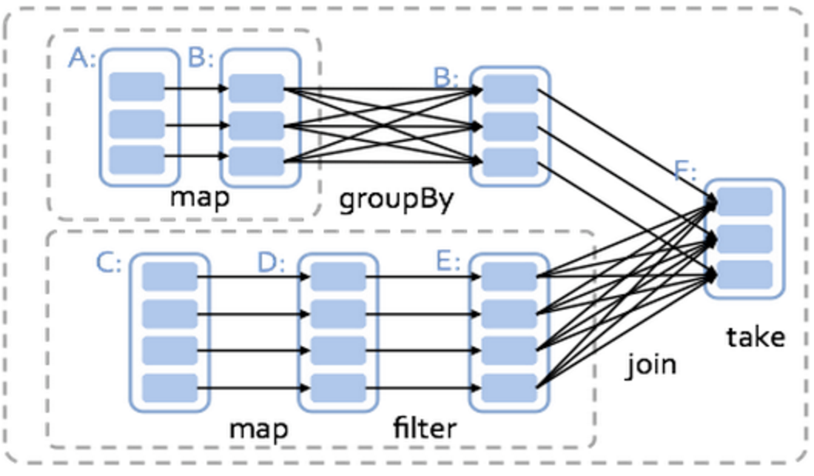

Synthetic Administrative Data
Ongoing Efforts at the Urban Institute
IRS Synthetic
Administrative Data
- Goal: Improve Public Administrative Tax Data
- Specifically, improve the Standards of Income (SOI) Public Use File (PUF):
- Several year lag time;
- Many excluded or limited variables (geographies, ages, some income measures);
- High earners are aggregated & blurred
- Successive PUFs tend to add further restrictions
IRS Synthetic Data - Plan & Progress
- Literature Review
--Initial Work Complete - Implement & Test Methodology on SOI PUF
--Getting Started w/ Existing Code - Apply Methodology to IRS Administrative Data
--Access Pending, Encouraging Steps - Report Out & Recommendations Broader Deployment
Some Challenges
- Very significant right tails on most variables, which is challenging for both:
- Synthesis Methodology
- Disclosure Protection
- Developing on the SOI PUF, not admin data
--High earners already masked/aggregated - Computational Environment at IRS is unclear, may be very limited
- Ideally synthesizing many variables
Literature Review - What We've Learned
Cornell's Approach is Best Understood/Tested:
- MICE Based Synthesis
- Develop Analysis Externally
- Submit Code to Administration
Recent Research Developments
Machine Learning within Chained Equations
Further research suggests that machine learning methods like CART [Reiter 2005b], random forests [Caiola 2010], can improve on parameterized approaches for synthetic data. Other work has found that support vector machines and neural networks can outperform parameterized methods for missing data imputation [Richman 2009]. However, infusing uncertainty into machine learning estimations is not a well-explored task, which poses potential issues for use of these methods
Mixture Modeling
In the creation of the Synthetic Longitudinal Business Database, SynLBD, Kinney used dirichlet-multinomial models for categorical variables and linear regression for continuous variables [Kinney 2011].
Bayesian Approaches w/ Gibbs Samplers
Spark Social Science
Urban's Efforts to Make Big Data Social Science Accessible

Our Problem:
- Big Data
- Small Budget
- Advanced Statistics
- Programming Limitations
'Big Data'
- ~One Billion Rows (Growing to 2.5B)
- Currently ~1TB of Data
- Couple Hundred Columns (But this shouldn't matter)
Small Budget
Affordability from Elasticity
Standing Clusters - either in Cloud or on Premise are unaffordable.
Advanced Statistics

Programming Limitations
- Preference for SAS/STATA
- Some R-Users, a few Python-Users
- Java/Scala/C are off the table
Accessibility as a General Concern
Our Solution
- Apache Spark
- R/Python w/ IDEs in Browser
- AWS Elastic MapReduce (EMR)
Apache Spark
- Distributed Memory Framework for Big Data
- Written in Scala/Java but has R/Python APIs
- Good & Improving Statistical Methods
- Free & Open Source

Relatively Familiar Languages
- SparkR
- PySpark
Development Environments in Browser
- RStudio for R
- Jupyter Notebooks for Python
Amazon Web Services (AWS) Elastic MapReduce (EMR)
- Elastic - Only Pay for Clusters During Use
- Fast - 10-12 Min Spin Up w/ Bootstrap
- Free Data Transfer From S3 (AWS Storage)
Amazon Web Services (AWS) Elastic MapReduce (EMR)
Also Cheap:
Four R3.8X Large EC2 Instances (Renting Four Computers in the Sky) gets you:
- 244 GB Memory Each (~1TB Total)
- 32v vCPU Each (128 Total)
- 1300 GB SSD Storage
All for ~$10/Hour
Our Solution

US:
- Alex Engler
- Data Scientist @ Urban Institute
- Professor of Data [Viz & Science] @ JHU & GU
- Contact:
- aengler@urban.org
- @alexcengler
- RMcClelland@urban.org

Prison Population Forecaster

Immigration and Residential Segregation